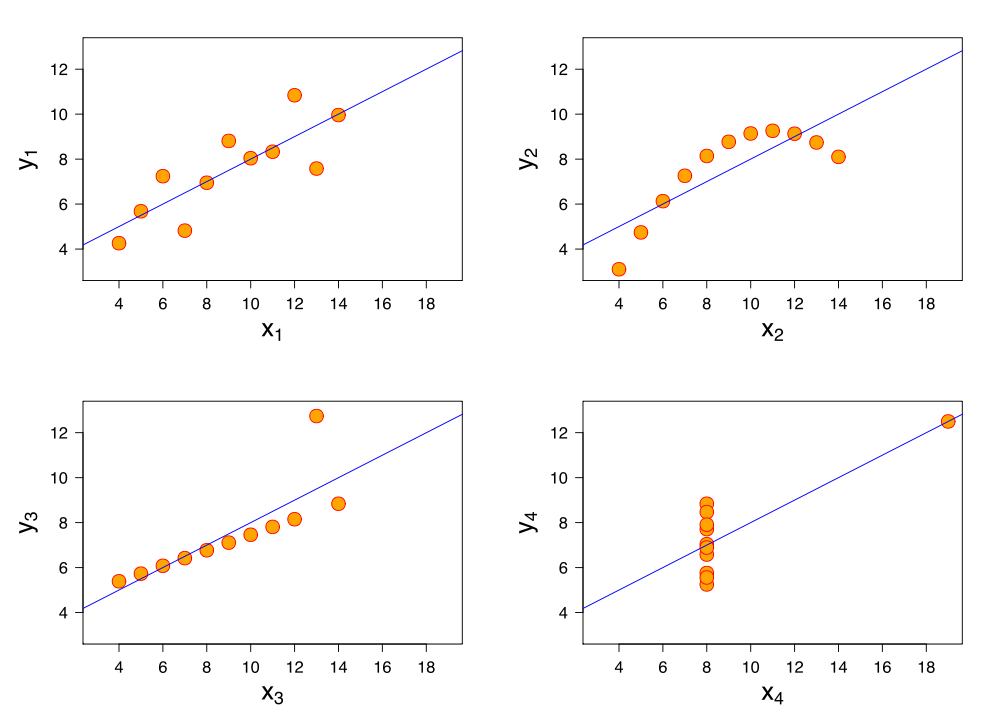

cc: Schutz
Das Anscombe Quartett ist eine Sammlung von unterschiedlichen Punktmengen, die sehr ähnliche statistische Eigenschaften haben. So stimmen etwa Mittelwert, Regressionsgerade, Varianz und Korrelation jeweils überein. Andererseits sieht man deutliche Unterschiede, wenn man die Punktmengen in einen Graphen zeichnet. Statistische Zahlenwerte zeigen also immer nur genau einen Blick auf einen Sachverhalt und sollten daher auch entsprechend bewertet werden. Oder im übertragenen Sinne: unsere Daten sagen viel über uns aus, manchmal aber auch kompletten Unfug. Daher müssen wir sie stets interpretieren und dürfen keine Maschinen wichtige Entscheidungen aufgrund von Daten für uns treffen lassen.